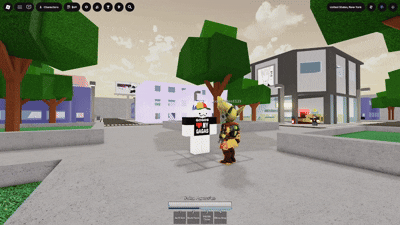
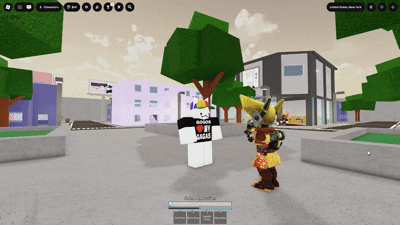
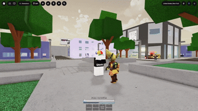
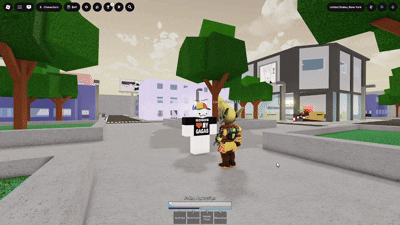

While M1 trading you block as they hit you, every 4 hits they lag on the last attack allowing you to counter attack

example of 4 m1 lagHowever you can also m1 once then block or wait until they hit you 3 times, but jumping before the fourth m1 is a downslam that others can use to punish you holding block

Downslaming a blockTo properly M1 trade you have to exchange hitting each others blocks, typically this means you m1 twice then block as they hit you

example of 2 m1 tradeWinning an M1 trade typically means you land your m1s on them and can begin your combo starting off with an advantage

Starting a combo with M1sAdditionally many characters have different M1 speed/range so you have to adjust your trading to match their different speeds
 Certain characters like 10 shadows have faster M1s
Certain characters like 10 shadows have faster M1s
M1s are essential for landing your moves and combos without them you will almost always lose and M1 trades allow you to have the upperhand in getting the first hit.